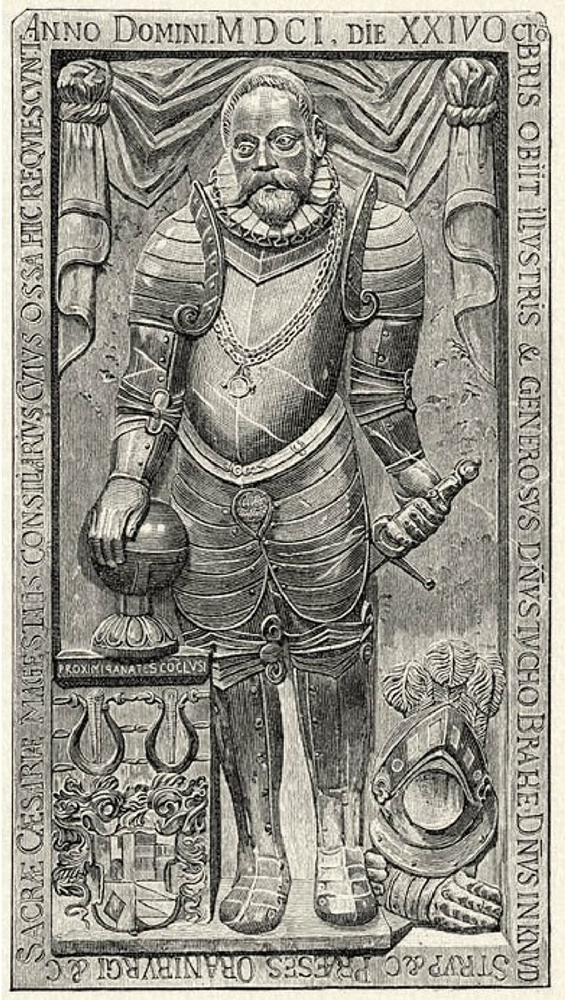
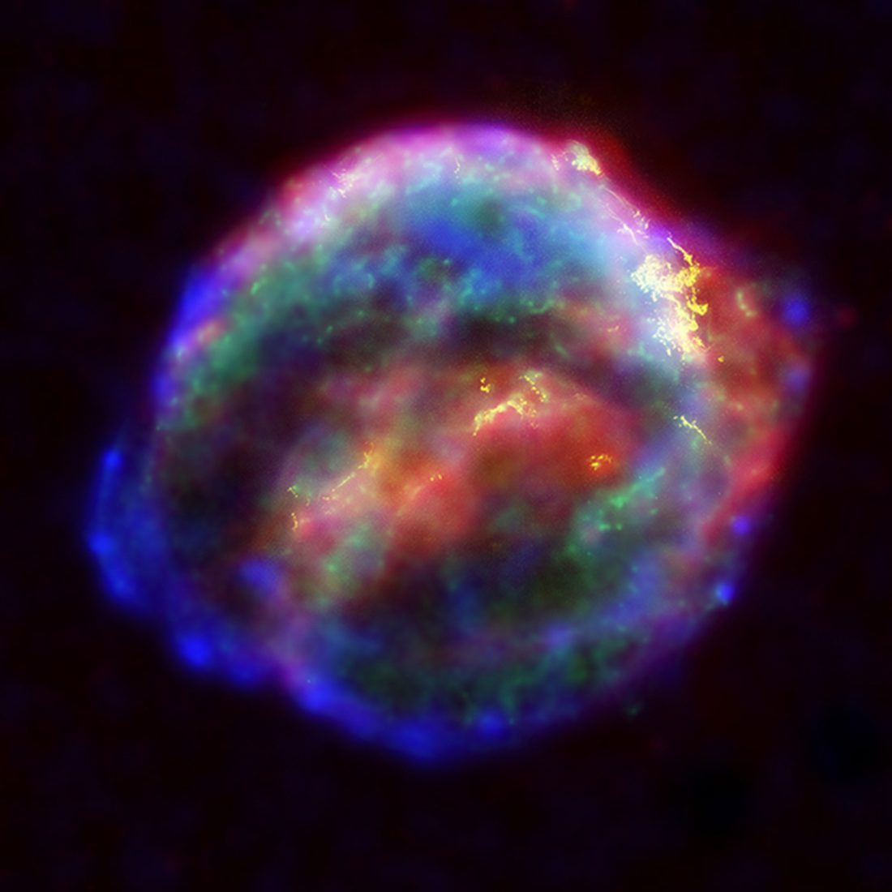
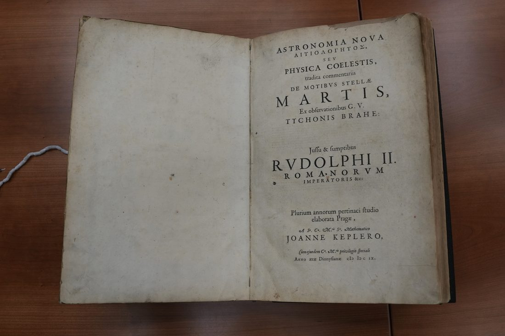
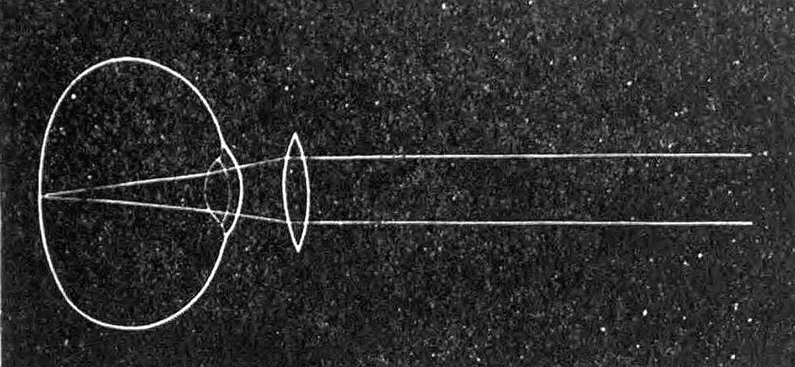
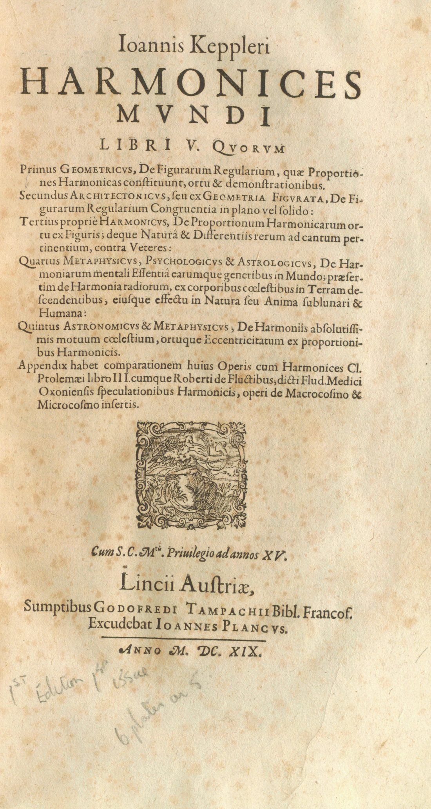
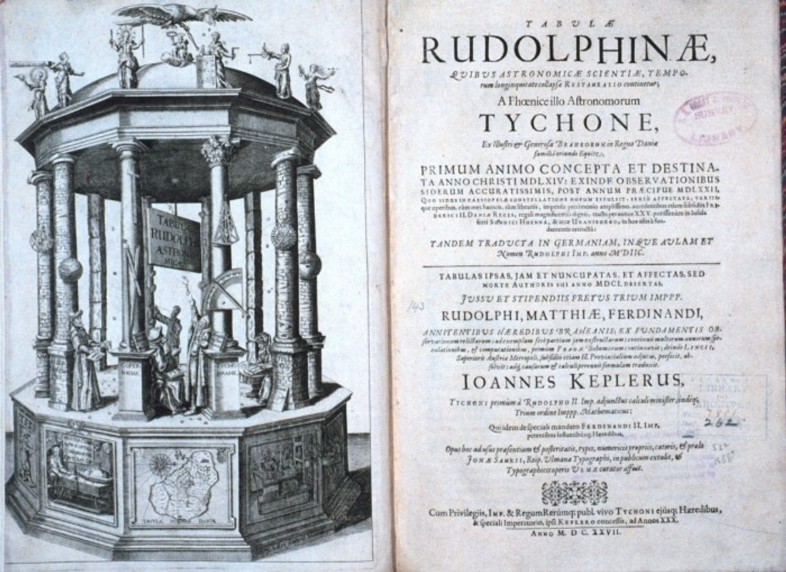

12 月 27 日，约翰内斯·开普勒出生。幼年体弱、视力不佳，却展露出惊人的数学天赋。
进入图宾根大学学习神学与数学，在这里第一次认真接受了哥白尼的日心体系。
赴格拉茨任数学教师，课余钻研天体运行的几何关系，埋下毕生志趣。

前往布拉格会见第谷·布拉赫，成为其助手。第谷去世后，开普勒继承了那批珍贵观测资料。
第谷去世，开普勒接任宫廷数学家，开始系统整理火星观测、推导行星定律。

开普勒观测并记录 SN 1604 超新星，写成专著——这也是肉眼能见的最后一颗银河系内超新星。

出版《新天文学》，给出椭圆轨道与面积定律，八年火星纠缠终于收官。

出版光学著作，解释眼睛成像与望远镜原理，奠定近代光学基础。

出版《宇宙和谐论》，提出第三定律（周期平方正比于距离立方），把行星运动写成简洁的比例。

历经二十余年，《鲁道夫星表》出版，融合第谷数据与自创定律，成为此后百年的天文与航海标准。
11 月 15 日，开普勒逝于雷根斯堡，享年 58 岁。他留下的定律，至今仍是天体力学基石。
读三大定律：把天空写成公式 → 读火星：八年的纠缠 → 读光学：眼睛、透镜与暗箱 → 读鲁道夫星表：星空的使用说明书 →